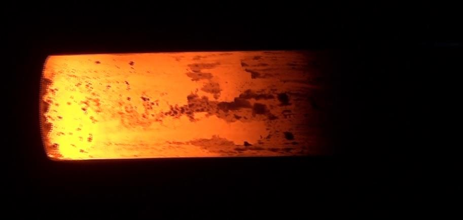
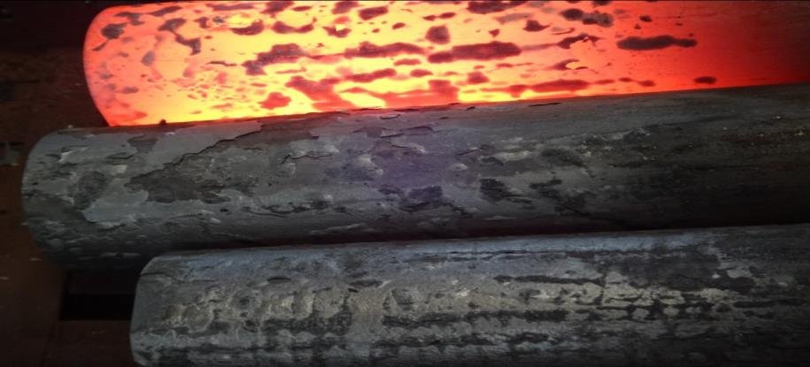
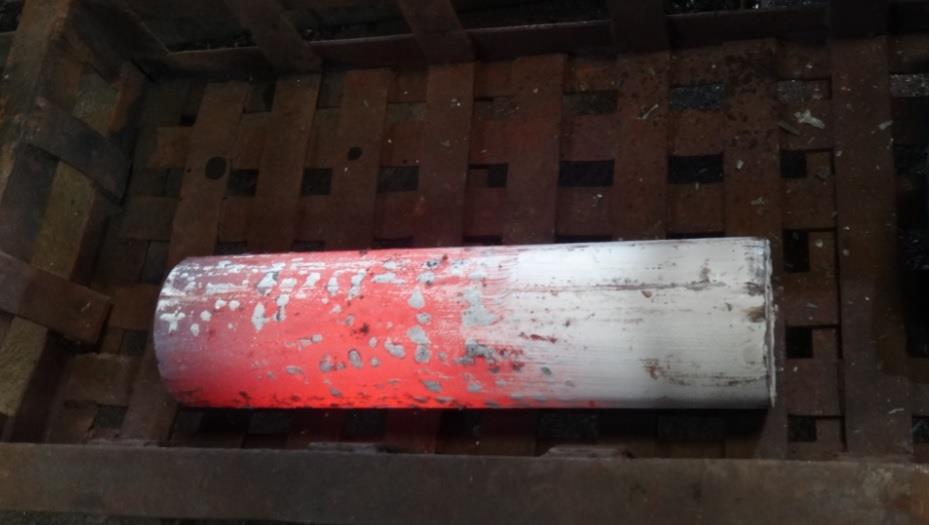
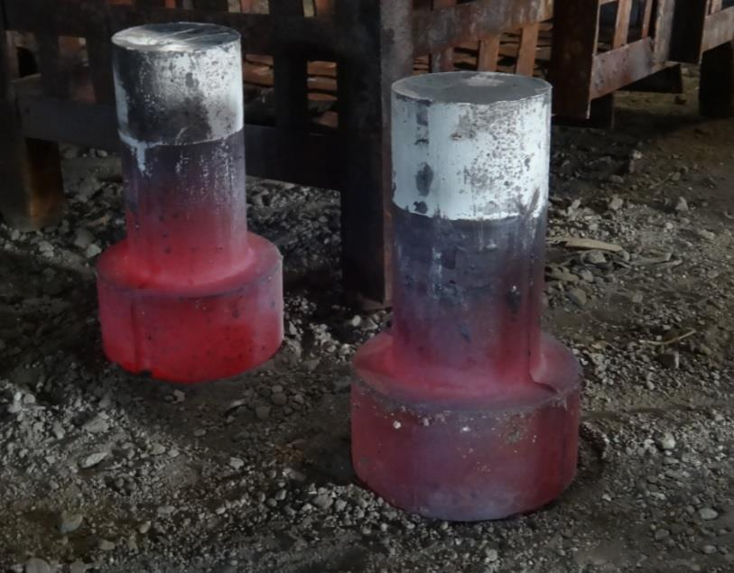
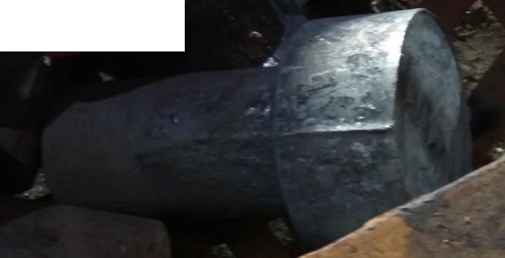
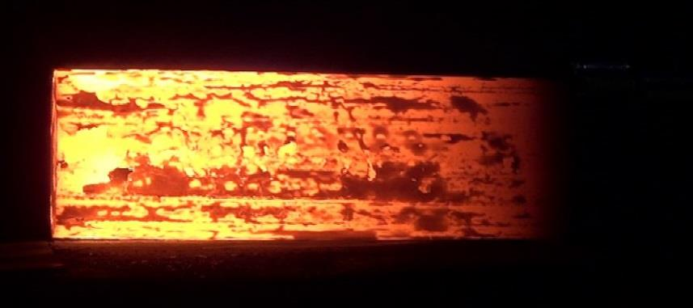

Introduction
Abstract: This article introduces a practical technique pioneered by a metallurgist from the Indian Institute of Technology. The technique enables reduction of burning loss or mill scale, and increasing yield in most kinds of steels. The technique is most successfully adopted in hot forging and hot rolling of stainless steel and other expensive alloy steels.
In hot forging and hot rolling and even closed die forging of Stainless Steels and alloy steels, the major factor accounting for reduced yield is ‘burning loss’ or ‘scale loss’ or ‘mill scale’ caused due to oxidation. Oxidation and decarburization of steel take place when billets or ingots are heated in a billet re-heating furnace, in the presence of air or products of combustion. Apart from burning loss of between 1.5% up to 4%, oxidation leads to numerous other problems like scale pit marks, bad quality surface finish of metal, rejections, cumbersome task of removal of mill scale and increased expensive operations like grinding, acid pickling, etc.
This article introduces a practical technique pioneered by an experienced metallurgist from the Indian Institute of Technology (I.I.T.). The technique enables any kind of steel to be heated by substantially minimizing the problem of oxidation.
Understanding Burning Loss Due to Oxidation
For the purpose of hot rolling, when billets or ingots are heated in an open furnace in the presence of air or products of combustion, the surface phenomena of oxidation takes place. Oxidation causes immediate corrosion of steel at high temperature and creates a layer of metal-oxide, or mill scale, on the surface of the billets or ingots. Decarburisation is a simultaneous reaction that takes place along with oxidation. However, this decarburization is limited to certain grades of steel only.
Oxidation
Oxidation of steel is caused by oxygen, carbon dioxide and/or water-vapour. The general reactions are given below:
Oxidation of steel may range from a tight, adherent straw-coloured film that forms at a temperature of about 180°C to a loose, blue-black oxide scale that forms at temperature above about 450°C with resultant loss of metal or reduced yield.
Harmful Effects of Oxidation
Oxidation leads to loss of dimensions and material as extra material allowance needs to be kept for scaling. Often, surface quality is deteriorated due to scale-pitting. This is especially true in the case of Nickel bearing grades of steel.
Throughout the industry, this burning loss or scale loss is simply treated as wastage and not many practical solutions are available to stop or reduce this wastage. Problems like thick adherent scaling or scale pit marks or decarburization are dealt by manually grinding off the scale or decarburized layer after the hot forging or hot rolling process.
Preventing or Reducing Burning Loss Due to Oxidation
Prevention or substantial reduction of oxidation is not only better than cure, it is profitable too. However, most of the available solutions pose a number of practical difficulties. Capital-intensive special furnaces and availability of human resource for using these high-end furnaces is a major issue. Many small hot rolling organisations cannot afford these solutions. Yet they are under mounting pressure to increase yield and reduce costs. Use of protective anti-scale coating has proven to be a logical solution to the problem of scaling and decarburization in hot forging and hot rolling.
Characteristics of Protective Coating and Its Use
Use of protective coating has been found beneficial and cost-effective. An anti-scale coating is applied on billets / ingots to be heated, before charging them into furnace. This anti-scale protective coating acts as a barrier between oxygen and metal. Care is taken to apply a uniform, impervious layer of coating on the billet to be heated. Coating ensures substantial reduction of oxidation, and thereby reduction in burning loss or mill scale. Anti-scale coating also reduces decarburization on billets during hot rolling operations. Heat transfer from heating media to metal is not affected due to anti-scale protective coating.
No reaction with steel surface, no release of toxic fumes during use or hot forging or storage, non-hazardous and economical implementation are other required characteristics of the coating.

Increasing Yield by the Use of Protective Anti-Scale Coating: Industrial Case Studies and Success Stories
Due to reduction in oxidation by the use of protective anti-scale coating during hot forging and hot rolling, the scale thickness is considerably reduced. The photographs and data below are of mill scale that were generated on billets during re-heating for hot rolling, with and without using protective anti-scale coating.
Case Study 1: Scale Thickness on Stainless Steel Billets


Case Study 2: Mild-Steel Billets — With vs. Without Coating
Another report of a number of mild-steel billets hot rolled without coating, in comparison with hot rolling similar billets with single coating and double coating of anti-scale protection, is provided below:
| Sr. No. | Billet Wt. Before Coating (kg) | Billet Wt. After Heating (kg) | Scale Difference (kg) | 3 Billet Wt. Before Coating (kg) | 3 Billet Wt. After Heating (kg) | Coating Type |
|---|---|---|---|---|---|---|
| 1 | 47.720 | 47.330 | 0.390 | With Coating | ||
| 2 | 47.010 | 46.660 | 0.350 | With Coating | ||
| 3 | 46.510 | 46.110 | 0.400 | 141.240 (Sr. No. 1, 2, 3) | 140.100 (Sr. No. 1, 2, 3) | With Coating |
| 4 | 47.720 | 46.900 | 0.820 | Without Coating | ||
| 5 | 46.930 | 46.260 | 0.670 | Without Coating | ||
| 6 | 46.450 | 45.800 | 0.650 | 141.100 (Sr. No. 4, 5, 6) | 138.960 (Sr. No. 4, 5, 6) | Without Coating |
Preventing Rejections: Nickel Bearing Steel, Problem vs. Solution

Uncoated ESPON coated
ESPON coated
Uncoated
ESPON coated Uncoated
Uncoated
ESPON coated
Uncoated
ESPON coatedOther Benefits of Using Protective Anti-Scale Coating in Stainless Steel Hot Rolling and Open Die Forging
1. Reduction in Grinding, Acid Pickling Time of Hot Rolled Products
Operations like grinding, acid pickling, etc. do not add value, are expensive and time consuming procedures. These operations are necessary to remove adherent scaling from the hot rolled billets. Time required for operations like shot blasting, grinding, acid pickling, etc. can be substantially reduced if protective anti-scale coating is applied on components before heat treatment. Aesthetic appeal of components is automatically enhanced without much effort as scaling is either prevented or reduced by the use of anti-oxidation protective coating.
2. Reduced Decarburization During Hot Rolling & Hot Forging
Certain grades like spring steels, ball bearing steel and rail steel are susceptible to decarburisation. During hot rolling of these special grades, decarburization needs to be consistently maintained to the required specification. However, due to unforeseen conditions like mill breakdown and unplanned downtime, billets remain in the furnace for longer time than usual. Also, when the plant is closed for weekly holiday, furnace is shut off abruptly, subjecting the billets to prolonged heating inside the furnace. If billets are not coated, it becomes difficult to guarantee the consistency in the decarburization level. Use of protective coatings on billets before charging them into the re-heating furnace enables to maintain the decarburization level consistently. This enables the hot rolling mill to guarantee their customers that decarburization level will always be less than the upper control limit.
Reduced decarburization on automobile leaf springs leads to increased fatigue strength of the leaf springs and greater reliability. Leaf springs heated after applying protective coating show substantially reduced decarburization and scaling.
3. Improving Surface Finish of Hot Rolled Components and Preventing Welding of Billets During Heating
During hot rolling of special grades of steel like Nickel (Ni) and 416 Stainless Steel containing high sulphur content, mill scale is greatly increased. Surface finish of hot rolled product may be compromised due to scale pits and rolled-in scale. Occasionally, due to heavy adherent scale, problem of roll skid is also encountered. Subsequent grinding operations are increased due to excessive mill scale. Protecting the billets with anti-scale protective coating before charging them into the re-heating furnace ensures reduced oxidation and mill scale. Coating the billets before charging them into the reheating furnace enables to achieve good surface finish of the hot rolled products free from scale pits and rolled-in scale.


During re-heating of billets for hot rolling and also during induction heating of billets for hot forging, sometimes, billets get welded together. This leads to unproductive process of separating the welded billets and downtime. Welding of billets during hot rolling and hot forging can be prevented by applying protective coating on billets before charging them into the furnace.
4. Improving Surface Finish of Seamless Pipes
In the manufacture of seamless pipes, machined hollow ingots are used in many places, especially in Poland. It becomes a necessity to protect the surface by protective coating when the ingot is reheated. This ensures better surface finish of the seamless pipe. This is achieved by the use of anti-scale protective coatings.
Summary
- 70% average reduction in burning loss or mill scale loss and increased yield in stainless steel hot forging and hot rolling is possible by the use of protective anti-scale coating.
- Protecting billets by applying anti-scale coating on them ensures a number of additional benefits like elimination or reduction of operations like grinding, acid pickling, etc., reduced decarburization, prevention of billet welding in furnace and improved surface finish.
Call to Action: If mill scale, decarburization, or grinding and pickling time are eating into your yield on stainless steel or alloy steel, team SPS can help you evaluate anti-scale protective coating for your hot forging or hot rolling process.

S.P. Shenoy
A metallurgist from the Indian Institute of Technology, Mumbai and CEO of M/s. Steel Plant Specialities (SPS), Mumbai, India, established in 1985, engaged in the manufacture of environment friendly hot forging die lubricants and a range of protective coatings that enable cost reduction in hot forging, heat treatment and hot rolling operations.